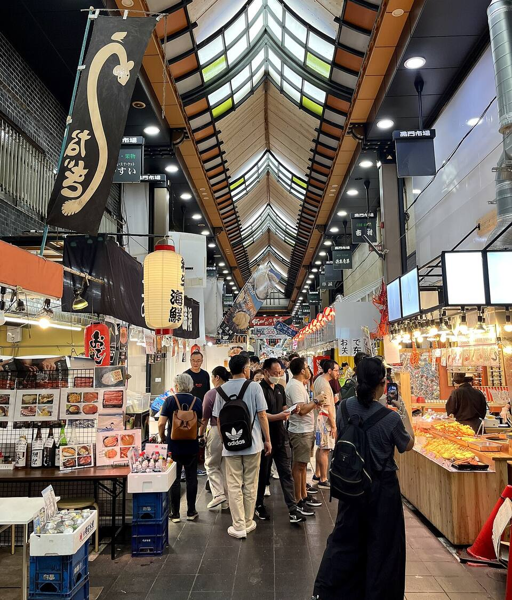
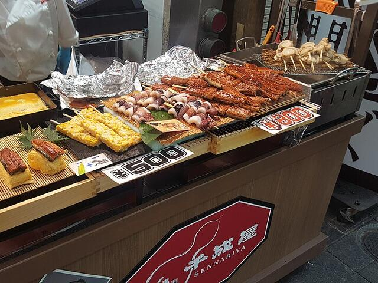
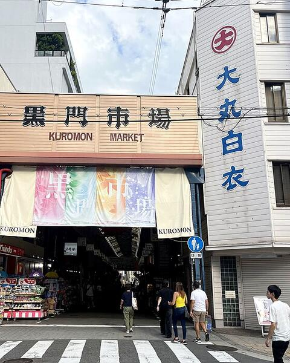
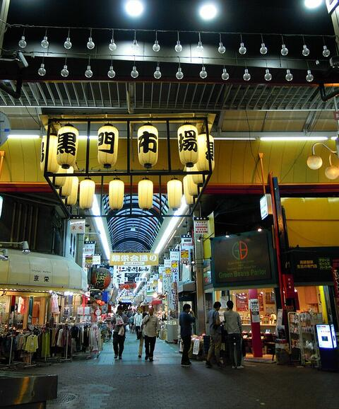

Scoprifoto di ほっきー · CC0
Mercato coperto · Nipponbashi
KuromonIchiba Market
il mercato che sveglia Osaka
580 m di portici · circa 150 botteghe · di solito 9:00–18:00
Ti piacerà perché ami mangiare camminando: capesante alla griglia, anguilla e tamagoyaki caldo, un banco dopo l'altro.l'assistente di GeppGo



Powered by Esri · fonti
900 mdal tuo alloggio12 minuti a piedi dal Ryokan Tsubaki